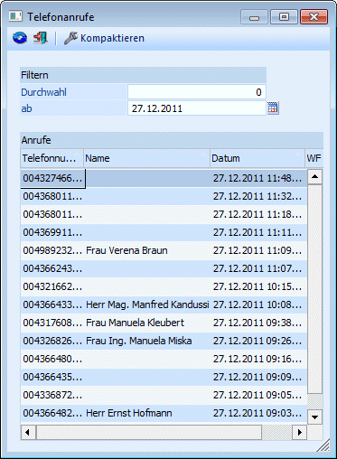
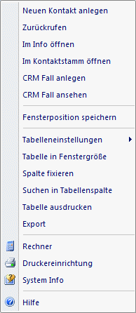
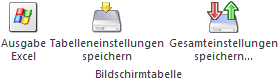

Über den Menüpunkt…
1 CRM
1 Telefonjournal
… kann eine Liste aller Telefonanrufe abgerufen werden. Voraussetzung dafür ist, dass das Programm CWLTAPI im Einsatz ist.
Jeder Arbeitsplatz, auf dem das CWLTAPI installiert und aufgerufen ist, und der "angerufen" wird, schreibt Einträge in das Telefonjournal (Tabelle T017CMP in der Systemdatenbank). Dabei wird die Telefonnummer des Anrufers, die Telefonnummer des Angerufenen (derjenige, der das Gespräch übernimmt), das Datum / die Uhrzeit des Gespräches gespeichert. Die Nummer des "Angerufenen" wird aus den Benutzereinstellungen (Benutzeranlage im WinLine ADMIN) übernommen.

Filtern
Im Bereich Filtern gibt es zwei Einstellungsmöglichkeiten:
Ø Durchwahl
Hier kann auf die Durchwahl eingeschränkt werden, für die die Telefonanrufe angesehen werden sollen. Ist beim Benutzer, der sich in die WinLine angemeldet hat, eine Durchwahl hinterlegt (siehe auch Benutzeranlage im WinLine ADMIN), dann wird diese Durchwahl auch vorgeschlagen.
Ø ab
In diesem Feld kann das Datum eingegeben werden, ab dem die Telefonanrufe angezeigt werden sollen. Standardmäßig wird immer das aktuelle Tagesdatum vorgeschlagen. Über den Kalenderbutton kann jedes beliebige Datum ausgewählt werden.
In der Tabelle werden folgende Daten angezeigt
Ø Telefonnummer
Hier wird die Telefonnummer des Anrufers angezeigt. Das kann sowohl eine "externe" Nummer als auch eine "interne" Nummer sein.
Ø Name
Sofern der Anrufer in der WinLine anhand der Nummer gefunden werden konnte, wird hier der Name des Anrufers angezeigt.
Ø Datum
In diesem Feld wird das Datum und die Uhrzeit des Anrufes angezeigt.
Ø WF
Wurde im Zuge des Anrufes auch ein Workflow angestoßen, wird hier die Workflownummer angezeigt.
Folgende Aktionen können im Telefonjournal durchgeführt werden:
Ø Kontakt aufrufen
Sofern anhand der Telefonnummer eine Zuordnung zu einem Datensatz getroffen werden konnte, dann durch einen Doppelklick auf den Eintrag der Datensatz geöffnet werden.
Über die rechte Maustaste stehen eine Reihe von weiteren Aktionen zur Verfügung, wobei die Anzahl der Funktionen davon abhängig ist, ob anhand der Nummer ein Datensatz gefunden wurde, oder nicht.
Wenn kein Datensatz gefunden wurde, dann stehen zwei Aktionen zur Verfügung:
Ø Neuen Kontakt anlegen
Damit wird das Kontaktestamm-Fenster geöffnet und ein neuer Kontakt kann angelegt werden.
Ø Zurückrufen
Mit dieser Funktion kann die Nummer, die in der Tabelle aktiv ist, angerufen werden.
Wenn der Nummer ein Name zugeordnet werden kann, stehen noch weitere Optionen zur Verfügung:

Ø Im Info öffnen
Mit dieser Aktion, die sinnvollerweise nur dann aufgerufen werden kann, wenn anhand der Nummer ein Datensatz gefunden werden konnte, wird die Konteninfo im WinLine INFO geöffnet.
Ø Im Kontaktstamm öffnen
Mit dieser Aktion, die sinnvollerweise nur dann aufgerufen werden kann, wenn anhand der Nummer ein Datensatz gefunden werden konnte, wird der Kontaktestamm geöffnet (wie beim Doppelklick).
Ø CRM Fall anlegen
Mit dieser Funktion kann der Workflow gestartet werden, der in den TAPI-Einstellungen (WinLine START - Parameter - Einstellungen - Register "TAPI") hinterlegt ist, wobei gewisse Daten bereits vorbelegt werden.
Ø CRM Fall ansehen
Wurde für diesen Anruf bereits ein Fall angelegt, kann dieser über die rechte Maustaste geöffnet und ggf. weiterbearbeitet werden.
Tabellenbuttons

Ø Ausgabe Excel
Durch Anwahl des Buttons "Ausgabe Excel" wird der Inhalt der Tabelle an Microsoft Excel übergeben.
Ø Tabelleneinstellungen speichern
Die Spalten einer Tabelle können grundsätzlich an beliebige Positionen verschoben, bzw. in der Breite entsprechend angepasst werden. Durch Anwahl des Buttons "Tabelleneinstellungen speichern" werden die Einstellungen benutzerspezifisch gespeichert und bei dem nächsten Aufruf des Programmpunktes wieder vorgeschlagen.
Ø Gesamteinstellungen speichern
Im Gegensatz zu "Tabelleneinstellungen speichern" können mit "Gesamteinstellungen speichern" mehrere Tabellenaufbauten gespeichert und nach Wunsch geladen werden. Zusätzlich werden Sonderfunktionen der Tabelle (z.B. "Spalte gruppieren") ebenfalls bei der Speicherung bedacht.
Buttons
Ø Anzeigen
Durch Anklicken des Buttons "Anzeigen" bzw. der Taste F5 wird die Tabelle gemäß den Einstellungen neu aufgebaut.
Ø Ende
Durch Drücken des Buttons "Ende" bzw. der ESC-Taste wird das Fenster geschlossen.
Ø Telefonjournal kompaktieren
Durch Anklicken dieses Buttons werden alle Einträge aus dem Journal gelöscht, die älter als 30 Tage sind, wobei jeweils nur die aktuell eingetragene Durchwahl berücksichtigt wird. Wenn keine Durchwahl eingetragen ist, wird auch nicht kompaktiert.
Im Zuge des Kompaktieren wird das Telefonjournal auch ausgelagert, wobei eine Datei "Backup Telephone Journal (JJJJ-MM-TT HHhmm).mbac" (z.B. Backup Telephone Journal (2012-01-09 09h32).mbac) erzeugt wird. Diese Datei kann bei Bedarf über den WinLine ADMIN rückgesichert werden.